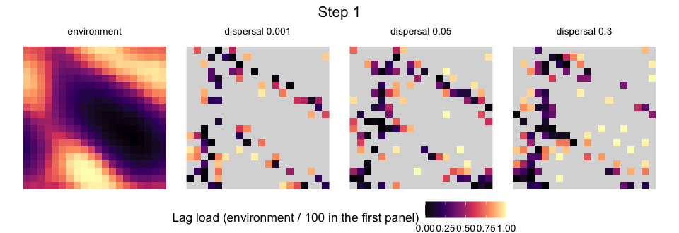
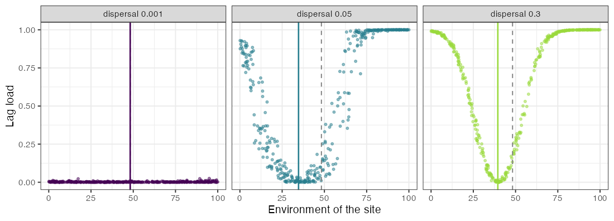
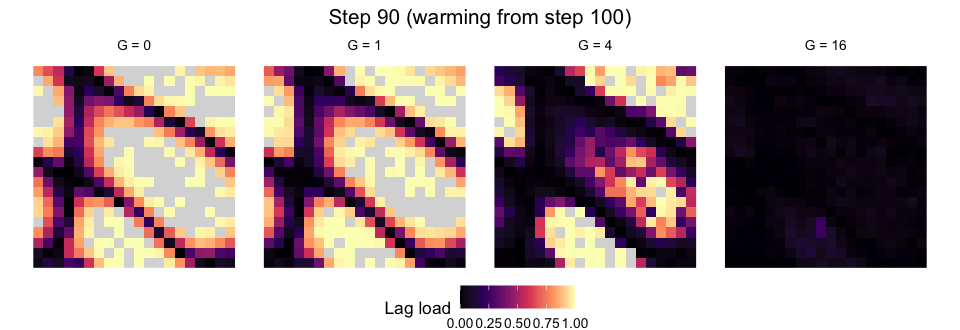
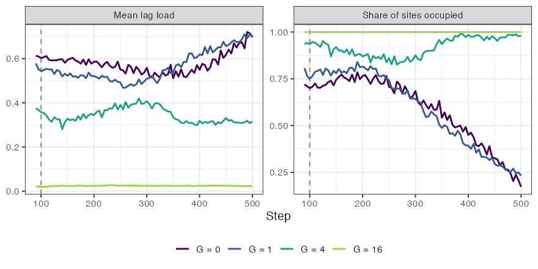
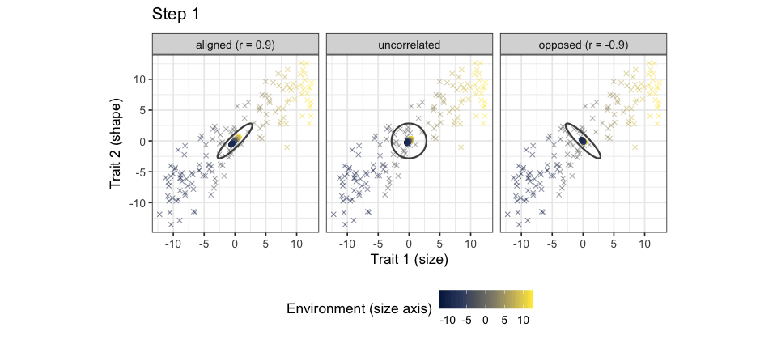
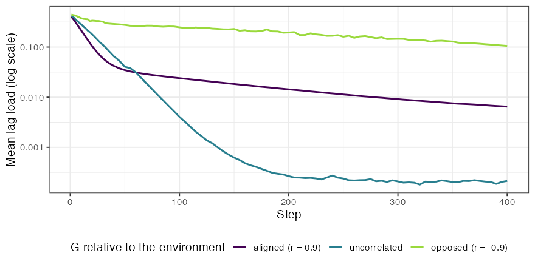
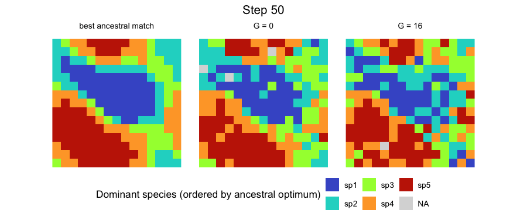
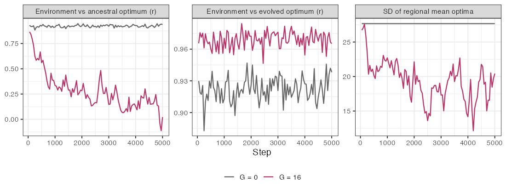

Quantitative genetics in the metacommunity
Source:vignettes/articles/quantitative-genetics.Rmd
quantitative-genetics.RmdIn the basic model of simulate_metacommunity(), every
population of a species has the niche optimum of its species, fixed for
the whole simulation. With evolution, each population
instead carries its own genetic mean of the optimum. That mean responds
to selection by the environment of its site, drifts at a rate set by
population size, mixes with the means of immigrants, and is drawn anew
when a population is founded by a few individuals. Species sorting, mass
effects and priority effects then act on populations that can adapt, and
the outcome can differ sharply from that of fixed niches.
This article shows what the extended model does, with animations of
single runs. Each panel is one run on one landscape, so the figures
illustrate the mechanisms rather than estimate their size; comparisons
that matter need replicates, as in
vignette("phylogenetic-structure"). The complete script,
which uses ggplot2, gganimate and gifski, is data-raw/animation_quantgen.R,
and it takes about a minute.
The model in brief
evolution_control() sets the quantitative genetics. Each
population has a genetic mean \bar z of
its optimum and an additive genetic variance G; its phenotype adds a linear reaction norm,
\bar p = \bar z + b\,(E - E_0), and
individuals vary around \bar p with
phenotypic variance P = G + V_E. Under
the Gaussian niche of breadth \sigma,
the response to selection in a generation follows Lande (1976),
\Delta \bar z = \frac{G}{\sigma^2 + P}\,(E - \bar p) + \epsilon, \qquad \epsilon \sim N\!\left(0, \frac{G}{N_e}\right),
where N_e is the effective size, a
fraction ne_ratio of the census size. Immigrants bring the
means of their sources, weighted by their numbers, and k founders draw their mean around that of
their sources with variance (G +
V_B)/k, where V_B is the
variance among the sources; seeds and initial populations are founded
the same way. With G = 0, V_E = 0 and b =
0 the abundances are those of the model without evolution for the
same seed.
With a niche of several environmental axes, one trait evolves per
axis and G and E become covariance matrices. The response is
the multivariate equation of Lande (1979), \Delta \bar{\mathbf z} = \mathbf G
(\boldsymbol\Omega + \mathbf P)^{-1} \mathbf d, in which \boldsymbol\Omega holds the squared niche
breadths and \mathbf d the difference
between the environment and the phenotype on each axis. A trait can
therefore change although it is not selected at all, through its genetic
covariance with traits that are; an axis with sigma = Inf
carries such a trait. genetic_matrices() builds G and E for
each species in three families, with G
proportional to a common phenotypic matrix, with no common structure, or
sharing its principal components.
library(comdynamite)
ev <- evolution_control(genetic_var = 4, env_var = 2, ne_ratio = 1)
# several traits: one covariance matrix per species
m <- genetic_matrices(c("sp1", "sp2"), n_traits = 2, family = "shared",
correlation = 0.6, heritability = 0.4)
ev2 <- evolution_control(genetic_var = m$genetic_var, env_var = m$env_var)Measuring maladaptation
maladaptation() returns, for every population present,
the deviation of its mean phenotype from the environment of its site and
the share of growth lost to that deviation, the lag load
L = 1 - \exp\!\left(-\frac{(E - \bar p)^2}{2(\sigma^2 + P)}\right),
which is 0 when the mean phenotype matches the site and approaches 1
as it moves away. With several traits, the squared distance becomes the
Mahalanobis distance \mathbf
d^\top(\boldsymbol\Omega + \mathbf P)^{-1}\mathbf d, so that a
deviation along a direction of large phenotypic variance costs less than
the same deviation along a direction of small variance. The load does
not depend on r_max, and it leaves out the cost of the
variance itself.
sim <- simulate_metacommunity(land, traits, alpha, dispersal = 0.05, n_steps = 300,
record_steps = seq(10, 300, 10), evolution = ev)
m <- maladaptation(sim, step = seq(10, 300, 10))
head(m)Local adaptation and migration load
We start with one species on a 20 x 20 grid whose environment runs from 0 to 100, with a niche breadth of 12 and the ancestral optimum at the regional mean. Populations colonise the grid and adapt to their sites, and the three panels differ only in the emigration probability. The first panel shows the environment.

With an emigration probability of 0.001, nearly every population adapts to its site, and the mean load at step 300 is 0.002. With more dispersal, gene flow keeps populations away from their local optima, and the mean load rises to 0.51 with dispersal 0.05 and to 0.66 with 0.3, against 0.67 and 0.72 for a species that does not evolve (G = 0) at the same dispersal. The load is not symmetric around the regional mean environment (48), however. The abundance-weighted mean phenotype of the species settled at 35 with dispersal 0.05 and at 40 with 0.3, and the sites above the regional mean carried most of the load (0.80 against 0.26 below it, with dispersal 0.05). In this run, most individuals lived in the lower half of the gradient, so most emigrants came from there; gene flow thus seems to pull populations towards the phenotype of the most productive part of the range rather than towards the centre of the gradient, and the populations of the upper end, with loads near 1, presumably persist as sinks fed by immigrants. Evolution also widened the range: with dispersal 0.05, 386 of the 400 sites were occupied with evolution and 336 without it.

Evolutionary rescue in a warming environment
Next, the environment of every site rises by 0.15 per step from step
100, passed to the simulation through env_time. A
population can follow the change by evolving in place or the species can
follow it by shifting its range; the panels differ only in the additive
genetic variance.


Before warming, at step 90, the species occupied 72%, 81%, 94% and 100% of the sites with G = 0, 1, 4 and 16, with mean loads of 0.61, 0.58, 0.38 and 0.02; part of the load is the migration load of the previous section. With G = 0 or G = 1, warming shrank the range to 17% and 23% of the sites by step 500, and the load of the remaining populations rose to 0.70. With G = 4, occupancy fell to 82% around step 265 and then recovered to 98% by step 500, with a load of 0.32, lower than before warming: the trajectory of evolutionary rescue, in which adaptation catches up with the change before the range collapses. With G = 16, the species kept all sites and its load stayed near 0.02.
Genetic constraints: the orientation of G
With two traits, the speed of adaptation depends on how much genetic
variance lies in the direction that selection pulls. Here the
environment has two axes that covary across sites (correlation 0.90),
each matched by one trait with a niche breadth of 8. All sites start
with 50 individuals at the ancestral optimum, without founder sampling
or drift (founder = FALSE, ne_ratio = Inf), so
the paths are the deterministic response to selection, and dispersal is
low (0.001). The three panels use genetic matrices with the same
variances but with a genetic correlation of 0.9 (aligned with the
environmental covariation), 0, or -0.9 (opposed to it), built with
genetic_matrices(). Crosses are the environments of the
sites, points are the genetic means of the populations, and the ellipse
is G, drawn at two standard
deviations.
m <- genetic_matrices("sp1", P = 4 * matrix(c(1, -0.9, -0.9, 1), 2), heritability = 0.5)
ev <- evolution_control(m$genetic_var, env_var = m$env_var)

With G opposed to the environmental covariation, populations first move along the long axis of G, the direction of greatest genetic variance, and only slowly turn towards their sites. At step 50 the mean load was 0.03 with aligned G, 0.04 with uncorrelated traits and 0.28 with opposed G, and at step 400 it was still 0.11 with opposed G. The aligned matrix was not the fastest throughout, though: from about step 100 its load stayed above that of uncorrelated traits (0.006 against 0.0002 at step 400). Our interpretation is that the scatter of the environments around their main axis lies in the direction in which the aligned G has little variance, so the last part of adaptation is slow. Maladaptation can thus persist with almost no gene flow, only because selection points where genetic variance is scarce.
Evolving priority effects and regional neutrality
Urban & De Meester (2009) showed, with an individual-based simulation, that early colonists can adapt to local conditions and reduce the establishment of an initially equivalent competitor, and that local adaptation combined with stochastic colonisation can obscure the relationship between species distributions and environmental gradients. Leibold et al. (2019) studied a landscape of patches subject to disturbance, in which early colonists of empty patches adapt fast enough to keep out species that were better adapted to begin with; repeated over the landscape, these local priority effects led to niche convergence of species at the regional scale and to neutral co-occurrence at the landscape level, while species still tended to monopolise local patches.
The extended model shows the first part of this. Five species with ancestral optima from 15 to 85 compete with equal coefficients on a 15 x 15 grid, with extirpation (0.02 per population and step) as disturbance and little dispersal (0.002). Without evolution, the dominant species of 69% of the occupied sites at step 5000 was the one whose ancestral optimum was closest to the site; with G = 16, it was 21%, about what five species would give by chance.


Over the last 1000 steps, the correlation between the environment and the ancestral optimum of the local community averaged 0.92 without evolution and 0.15 with it, whereas the correlation between the environment and the evolved optimum averaged 0.97, and the most abundant species made up about 95% of the individuals of a site in both runs. All five species persisted. Local adaptation combined with stochastic colonisation thus obscured the relationship between species and the environment, as in Urban & De Meester (2009), while each site remained dominated by one species adapted to it. The regional convergence of niches was only partial: the standard deviation of the regional mean optima of the species fell from 27.7 to an average of 18 over the last 1000 steps, fluctuating between 12 and 23 as populations were lost and replaced, so the species remained regionally distinct. The run moves in the direction described by Leibold et al. (2019), but we did not measure neutrality, and we did not try to match the structure or the parameters of their model. These are single runs. The article Replicating Leibold et al. (2019) follows their model and measures regional neutrality.
Potential and realised ranges
Mechanistic models of biodiversity distinguish the potential distribution of a species, set by its environmental requirements, from the distribution it realises under demography, dispersal and competition. In the plant model of Cabral & Kreft (2012), 53% of the species did not fill their climatically determined potential range, and 11% reached their highest local abundances in suboptimal conditions rather than in the most suitable habitat. With evolution, the potential range itself is no longer fixed. In the run of the previous section, the species occupied on average 38% of the sites where their ancestral optimum could grow (between 30% and 50%) without evolution, a deficit due to competition, disturbance and dispersal limitation, and 3% of their sites lay outside that potential range. These potential ranges are wide (127 to 199 of the 225 sites, from growth above 1 after extirpation, ignoring competition). With G = 16, 33% of the sites they occupied lay outside their ancestral potential range, because local adaptation turned unsuitable sites into suitable ones. A potential range estimated from the ancestral niche can thus misjudge both where a species should be and where it is.
The design of these examples, switching one process off and comparing, is the one Cabral, Wiegand & Kreft (2019) used to weigh the processes of their eco-evolutionary island model, BioGEEM, a stochastic, grid-based model that combines metabolic constraints, demography, dispersal, competition, mutation, speciation and geo-climatic dynamics. Cabral, Valente & Hartig (2017) argued that mechanistic models in macroecology should be flexible and modular so that different theories can be expressed and contrasted. The approaches differ in grain, however. The model of Cabral & Kreft (2012) simulates stage-structured populations on a grid, with demographic rates and carrying capacity following metabolic constraints. comdynamite follows the means and variances of populations in discrete time with a quantitative-genetic approximation (constant G, Gaussian phenotypes), which makes analytical expectations available, such as the drift of the means at G/N_e per generation, and keeps the runs fast enough for replicated designs.
Limitations
The genetic variance is constant: G
does not evolve, is not eroded by drift or selection, and is not
restored by mutation, so the model does not capture changes in
evolvability. Phenotypes are Gaussian around the population mean, and
populations of the same species do not differ in G. With several traits, environments are
static and speciation is not yet available;
simulate_evolving_metacommunity() takes a single trait. The
patterns above come from single runs and should be read as illustrations
of mechanisms.
References
Cabral, J. S., & Kreft, H. (2012). Linking ecological niche, community ecology and biogeography: insights from a mechanistic niche model. Journal of Biogeography, 39, 2212–2224. https://doi.org/10.1111/jbi.12010
Cabral, J. S., Valente, L., & Hartig, F. (2017). Mechanistic simulation models in macroecology and biogeography: state-of-art and prospects. Ecography, 40, 267–280. https://doi.org/10.1111/ecog.02480
Cabral, J. S., Wiegand, K., & Kreft, H. (2019). Interactions between ecological, evolutionary and environmental processes unveil complex dynamics of insular plant diversity. Journal of Biogeography, 46, 1582–1597. https://doi.org/10.1111/jbi.13606
Lande, R. (1976). Natural selection and random genetic drift in phenotypic evolution. Evolution, 30, 314–334. https://doi.org/10.1111/j.1558-5646.1976.tb00911.x
Lande, R. (1979). Quantitative genetic analysis of multivariate evolution, applied to brain:body size allometry. Evolution, 33, 402–416. https://doi.org/10.1111/j.1558-5646.1979.tb04694.x
Leibold, M. A., Urban, M. C., De Meester, L., Klausmeier, C. A., & Vanoverbeke, J. (2019). Regional neutrality evolves through local adaptive niche evolution. Proceedings of the National Academy of Sciences, 116, 2612–2617. https://doi.org/10.1073/pnas.1808615116
Urban, M. C., & De Meester, L. (2009). Community monopolization: local adaptation enhances priority effects in an evolving metacommunity. Proceedings of the Royal Society B, 276, 4129–4138. https://doi.org/10.1098/rspb.2009.1382